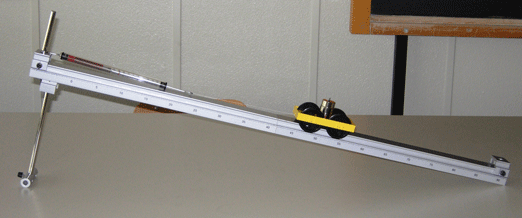

Equilibrio per traslazioni
Piano inclinato (laboratorio)
Strumenti: 2 Basi cm 30 (S), 1 Elemento di congiunzione (S), 1 Rocchetto di filo (S), 1 Forbici (S), 1 Morsetto cilindrico (S), 3 Masse da 50 g (S), 1 Dinamometro (M1), 1 Carrello sperimentale (M1), 1 Metro a nastro (M1), 1 Asta 50 cm (M1)
Montaggio Collegare le due basi di alluminio con l'apposita piastrina di giunzione onde ottenere una guida lunga 60 cm; infilare l'asta da 50 cm in un foro estremo della guida e montare all'estremità inferiore dell'asta il morsetto cilindrico in modo da conferire stabilità all'apparecchio. L'apparecchiatura deve essere predisposta come nell'illustrazione.

Misure: Caricare il carrello (massa 50 g) con tre masse da 50 g. Collegare il dinamometro parallelamente al piano e leggere la forza esercitata dal carrello sul dinamometro. Misurare l'altezza h (cm) e la lunghezza l (cm) del piano inclinato. Ripetere l'esperienza per varie inclinazioni diverse del piano, ricordandosi di stimare l'errore associato nelle misure di h, l e della forza-parallela F = LN. Riportare i risultati nella seguente tabella:| Misura | altezza h (cm) | lunghezza l (cm) | forza F (N) |
| 1) | |||
| 2) | |||
| 3) |
Rielaborazione:
- Verificare che, nei limiti degli errori di misura, vale la seguente relazione F = FP · h / l. Supponendo trascurabile l'errore commesso nella misura della forza peso totale P, abbiamo che l'errore in FP · h / l è dato dalla seguente formula:
Δ (FP · h / l) = FP · h / l (Δh / h + Δl / l).
L'errore nella misura di F è invece dato dalla sensibilità del dinamometro. - Verificare che il grafico della componente parallela della forza-peso F in funzione del rapporto h / l è una semiretta passante per l'origine.